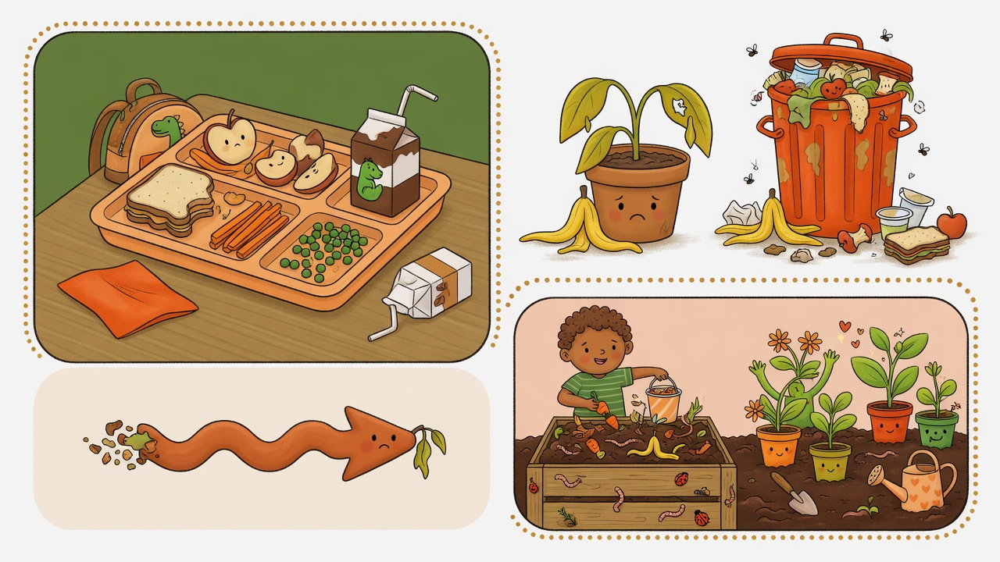
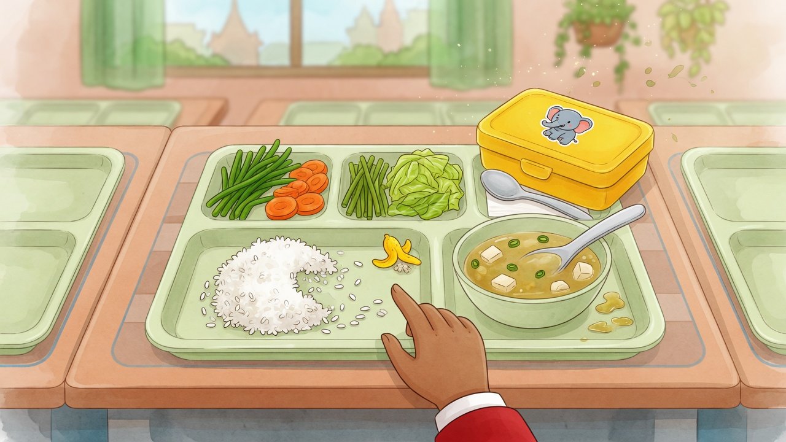
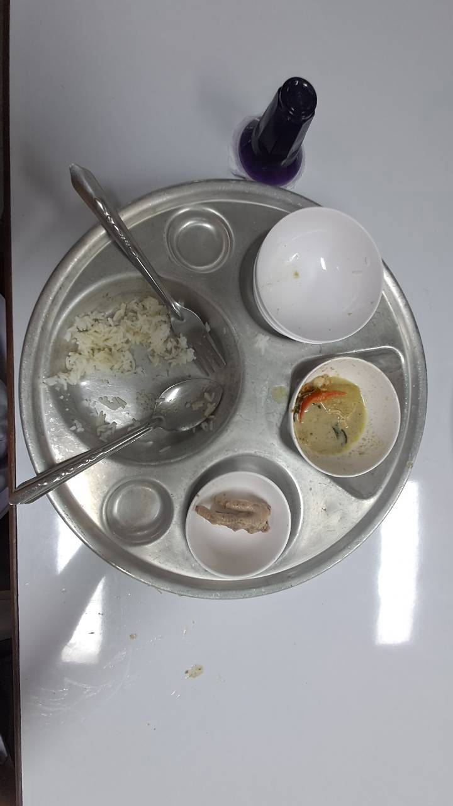
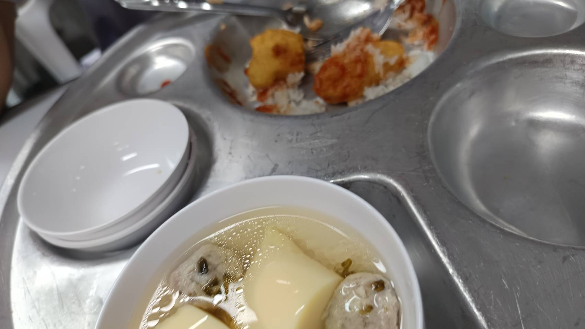
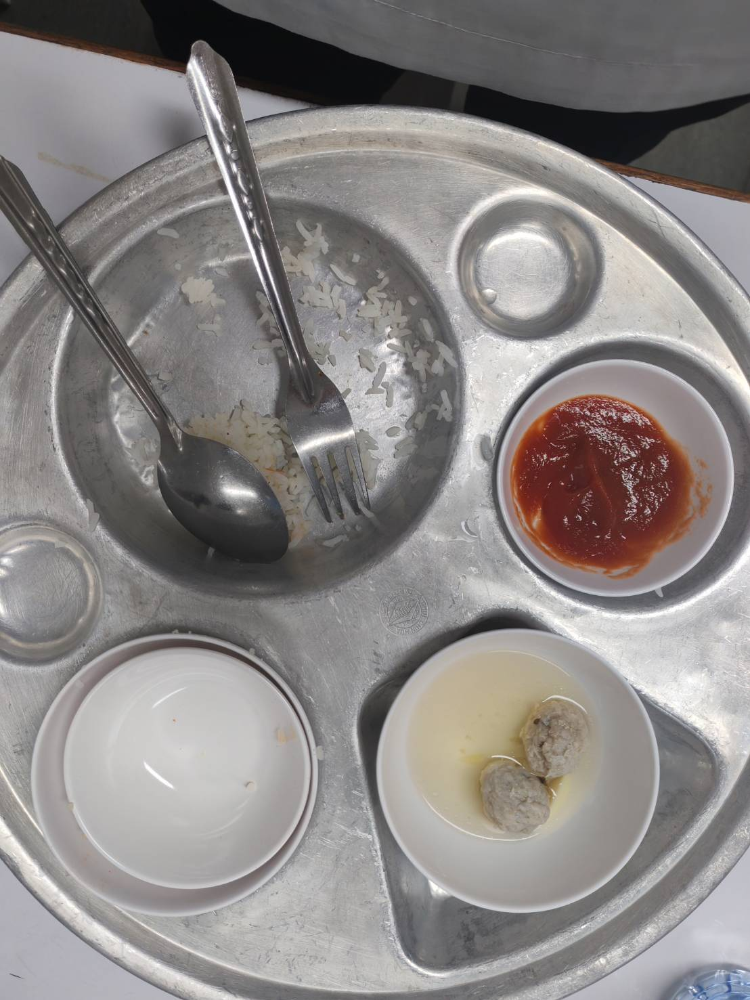

ทำไมถึงเหลือ
ในโรงอาหาร ครัวต้องเดาว่าวันนี้มีกี่คน และแต่ละคนกินเท่าไร ถ้าเดาสูงไป อาหารก็เหลือ ถ้าเด็กตักเยอะเกิน ก็กินไม่หมดเหมือนกัน
บางวันทำเยอะไป บางวันเด็กกินไม่หมด แล้วของที่เหลือก็ถูกทิ้ง เว็บนี้ช่วยดูว่าเหลืออะไรบ้าง แล้วหาทางลดและใช้ให้คุ้มขึ้น

ถาดหลังกินเสร็จ — ยังมีข้าวและกับข้าวเหลืออยู่
เล่าแบบสั้น ๆ ให้อ่านรู้เรื่อง

ในโรงอาหาร ครัวต้องเดาว่าวันนี้มีกี่คน และแต่ละคนกินเท่าไร ถ้าเดาสูงไป อาหารก็เหลือ ถ้าเด็กตักเยอะเกิน ก็กินไม่หมดเหมือนกัน
ถ้าเรารู้ว่าเหลืออะไรบ่อย ๆ จะทำอาหารได้ใกล้ความจริงขึ้น ของที่เหลือจริง ๆ ก็ยังเอาไปหมักเป็นปุ๋ยช่วยต้นไม้ได้



รูปถาดจริงที่ใช้สอนคอมพิวเตอร์แยกว่าเหลือข้าว ผัก หรือเนื้อ
สั้น ๆ แค่ 3 ข้อ
ถ่ายรูปถาด หรือให้ครัวจดเอง แล้วแยกเป็นข้าว ผัก เนื้อ ฯลฯ
ใช้ตัวเลขช่วยคิดว่าวันถัดไปควรทำเท่าไร จะได้ไม่เหลือเยอะ
ดูว่าส่วนไหนหมักเป็นปุ๋ยได้ ก่อนเอาไปใส่ดินหรือต้นไม้
อ่านสั้น ๆ เรื่องอาหารเหลือ การถ่ายรูปถาด และการทำปุ๋ยหมัก
ไปอ่าน →ดูตัวอย่างตัวเลข และ 2 ขั้นว่าของเหลือควรดูคุณสมบัติยังไง แล้วปรับเข้าเป้ายังไง
ดูแนวทาง →